Farinha da vitalidade para homens 50+: o que é mito e o que é verdade
Posts e vídeos prometem energia, testosterona e ereções melhores com uma farinha de sementes e ervas como catuaba, ginseng, marapuama e beterraba. Veja, ingrediente por ingrediente, o que a ciência mostra, onde estão os riscos e o que realmente ajuda quem sente falta de disposição ou enfrenta disfunção erétil.
Se você anda com menos disposição, ou percebeu que as ereções já não são as mesmas, é muito provável que já tenha visto: um vídeo ou um post jurando que uma farinha caseira, feita de sementes e ervas, devolve a energia e a virilidade.
Essa vontade de encontrar uma saída é compreensível. Ninguém quer conviver com algo que mexe com a energia, com a autoestima e com a vida a dois, principalmente quando alguém garante que a solução cabe numa colher.
Este texto não vai dizer que tudo isso é mentira, nem que tudo funciona. Vamos olhar ingrediente por ingrediente: o que a promessa diz, o que a ciência mostra, como usar com mais segurança e quando é hora de procurar um médico.
Querer acreditar é humano. O objetivo aqui é ajudar você a escolher com segurança, sem tirar a esperança.
O que é a “farinha da vitalidade”?
Não existe uma receita única. Os posts variam, mas costumam misturar dois grupos de ingredientes: as sementes (chia, linhaça, gergelim, girassol e abóbora) e as ervas e raízes (catuaba, marapuama, ginseng, gengibre, beterraba, guaraná e maca). Há até produtos prontos vendidos como “energético natural” que reúnem vários deles na mesma fórmula.
Como cada pessoa mistura de um jeito, ninguém sabe a quantidade real de cada ingrediente. E é por isso que fica tão difícil afirmar que “essa farinha funciona”: o que existe de estudo é sobre cada ingrediente isolado, não sobre a mistura.
Duas queixas que não são a mesma coisa
A farinha costuma ser vendida como se resolvesse tudo de uma vez, mas a falta de disposição e a disfunção erétil são problemas diferentes, com causas diferentes.
A falta de disposição pode vir do sono ruim, do excesso de peso, do estresse, de doenças, de medicamentos e, em alguns casos, da testosterona baixa — assunto que explicamos em Testosterona depois dos 50.
Já a disfunção erétil tem relação direta com a circulação do sangue. Diabetes, pressão alta, colesterol alto e doenças do coração estão entre as condições mais associadas a ela. Por isso ela merece investigação, e não só uma colher de farinha.
As sementes: boa comida, promessa exagerada
As sementes são alimentos de verdade e podem fazer parte de uma boa alimentação. O problema não está nelas, e sim na ideia de que “uma colher de cada” resolve a vitalidade. Veja o que costuma ser dito nos vídeos e o que as tabelas de composição mostram.
Chia
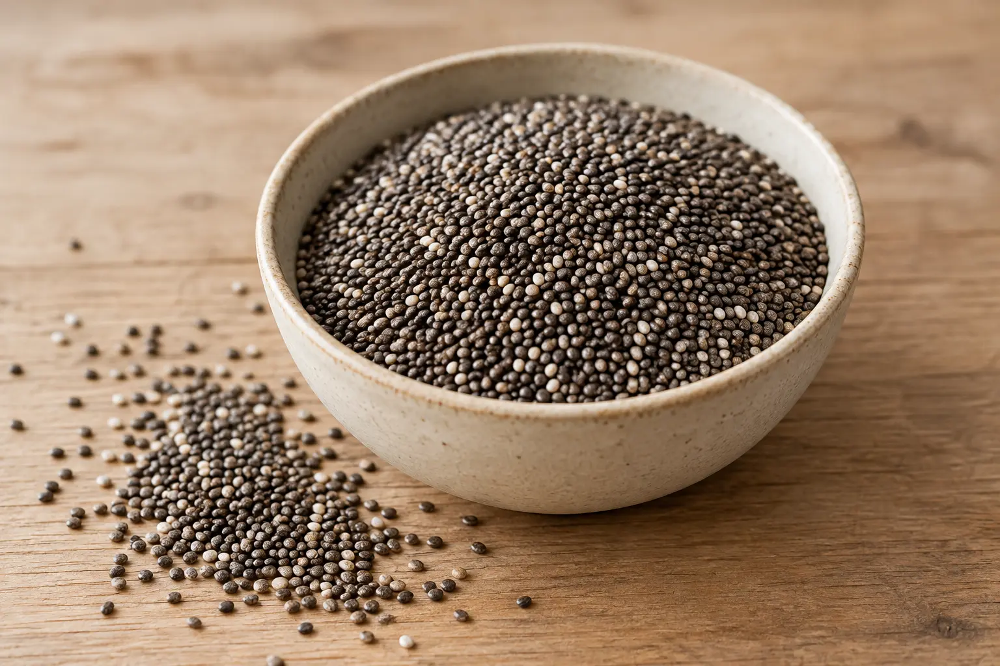
“Uma colher de chia tem 20 vezes mais cálcio que o leite.”
A chia é, sim, uma fonte interessante de cálcio, de fibras e de ômega-3 de origem vegetal.
Mas a conta de “20 vezes” não fecha. Por 100 g, a chia tem cerca de 630 mg de cálcio e o leite, cerca de 120 mg: dá umas 5 vezes. Como a porção diária de chia é de 15 a 30 g, ela entrega algo entre 95 e 190 mg de cálcio, menos do que um copo de leite (cerca de 300 mg). Além disso, o corpo absorve melhor o cálcio do leite.
Uso racional: de 15 a 30 g por dia, de preferência hidratada em água, leite ou iogurte.
Cuidado: em excesso, pode causar desconforto intestinal.
Linhaça
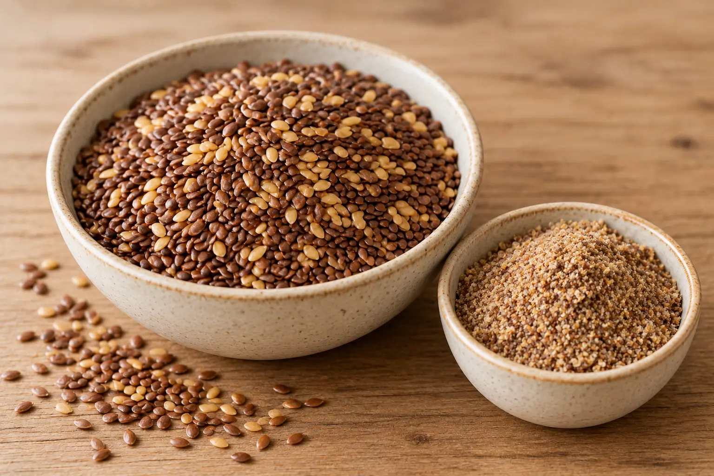
“Uma colher de linhaça é uma excelente fonte de ômega-3.”
A linhaça tem mesmo muito ômega-3 do tipo ALA, além de fibras.
Dois detalhes mudam o proveito. A semente inteira atravessa o intestino sem liberar seus nutrientes, então o ideal é consumi-la triturada. E o corpo converte o ALA nas formas ativas (EPA e DHA, as do peixe) de maneira pouco eficiente, algo entre 1% e 10%. A linhaça ajuda, mas não substitui o peixe.
Uso racional: triturada, guardada na geladeira em pote fechado por no máximo cerca de 90 dias. Comece com meia colher de sopa por dia.
Gergelim
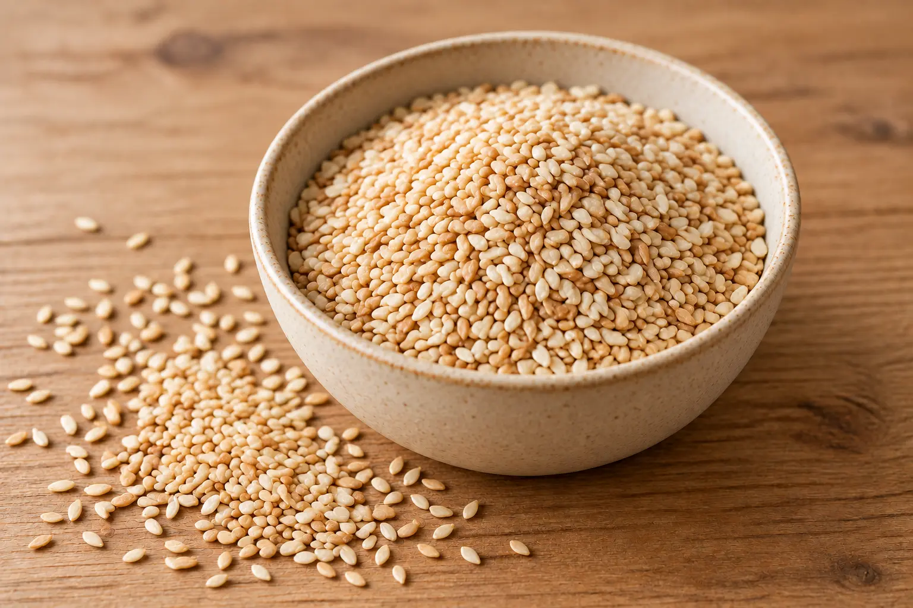
“Uma colher de gergelim para ter vitamina E.”
O gergelim é boa fonte de minerais, como cálcio e ferro.
A vitamina E, porém, não é o ponto forte dele: nas tabelas de composição do USDA, ela não aparece em quantidade relevante. Quem se destaca nisso é a semente de girassol.
Semente de girassol
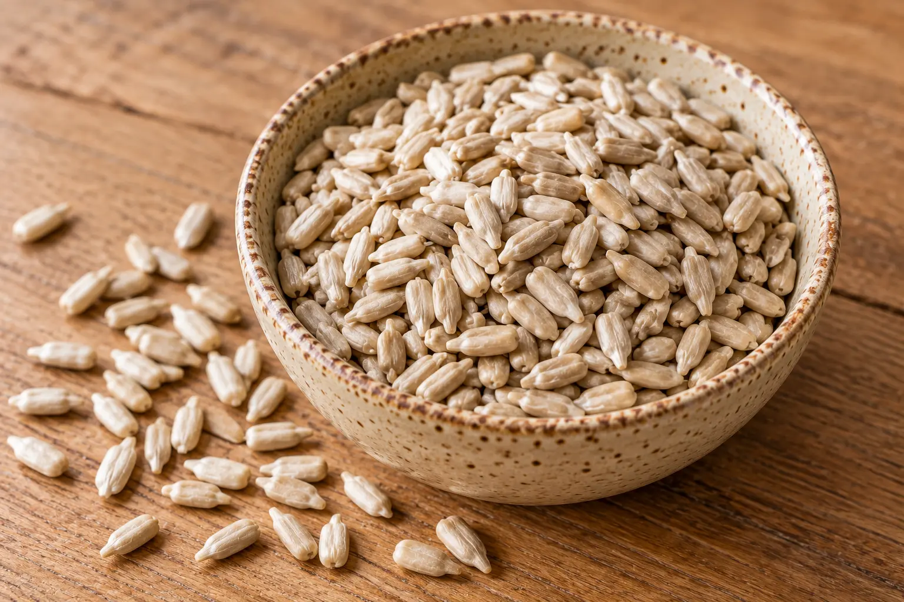
“Uma colher de semente de girassol para ter altos teores de vitaminas do complexo B.”
A semente de girassol é considerada uma das maiores fontes de vitamina E da alimentação, um antioxidante importante para o sistema imunológico. Ou seja, é ela que tem o nutriente que o vídeo atribuiu ao gergelim.
Uso racional: uma porção de cerca de 30 g por dia, o equivalente a um quarto de xícara, de preferência sem sal adicionado.
Semente de abóbora
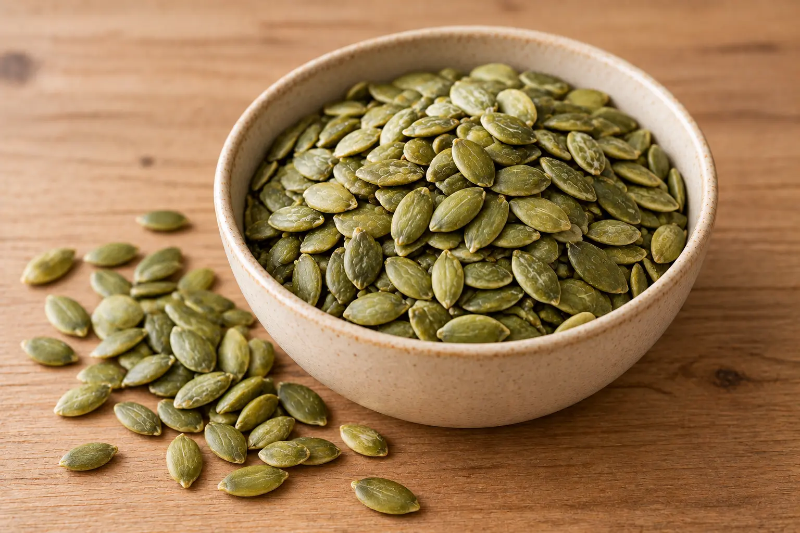
“Uma colher de semente de abóbora para ter vitamina A, zinco e muitas fibras.”
A semente de abóbora é, sim, uma ótima fonte de zinco (cerca de 7,8 mg por 100 g), de magnésio, de proteína e de fibras.
Vitamina A, não: ela é praticamente inexistente na semente e costuma ser associada à polpa da abóbora.
O zinco participa da produção de testosterona, mas as pesquisas mostram que o suplemento só aumenta o hormônio em quem tem deficiência de zinco. Uma colher da semente (uns 10 g) traz menos de 1 mg, algo em torno de 7% do que um homem adulto precisa por dia (cerca de 11 mg).
Uso racional: como parte de uma alimentação variada. Não existe quantidade da semente para “subir a testosterona”. Quem suspeita de falta de zinco deve investigar com o médico.
As ervas e raízes: do uso tradicional à evidência
Aqui a distância entre a tradição popular e a prova científica costuma ser maior. Um uso antigo não é o mesmo que um efeito comprovado. Mas a ciência também não descarta tudo: em alguns casos existem sinais, só que pequenos. Quando o ingrediente tem algo de verdadeiro, isso vem primeiro.
Beterraba
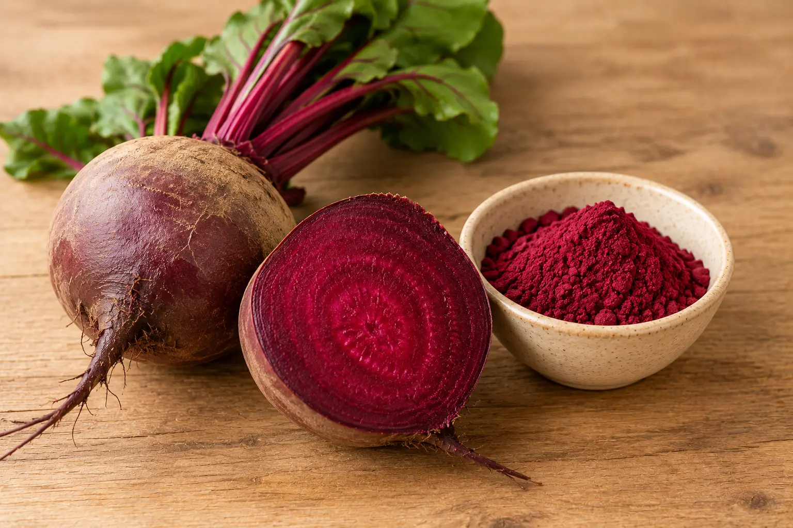
“A beterraba é um Viagra natural e resolve a impotência.”
A beterraba é rica em nitrato, que o corpo converte em óxido nítrico, uma molécula importante para a ereção. Isso é real: estudos mostram que ela reduz um pouco a pressão arterial, em média uns 4 mmHg na máxima, e mais em idosos, obesos e pré-hipertensos.
Mas não há prova científica de que ela trate a disfunção erétil, e os estudos diretos sobre isso são escassos. A beterraba é um bom alimento, não um “Viagra natural”.
Prazo nos estudos: os que mediram a pressão duraram de 2 a 56 dias.
Cuidado: quem usa remédio para pressão, nitratos (usados na angina) ou remédios para disfunção erétil deve falar com o médico antes de aumentar o consumo, porque a pressão pode cair demais.
Gengibre
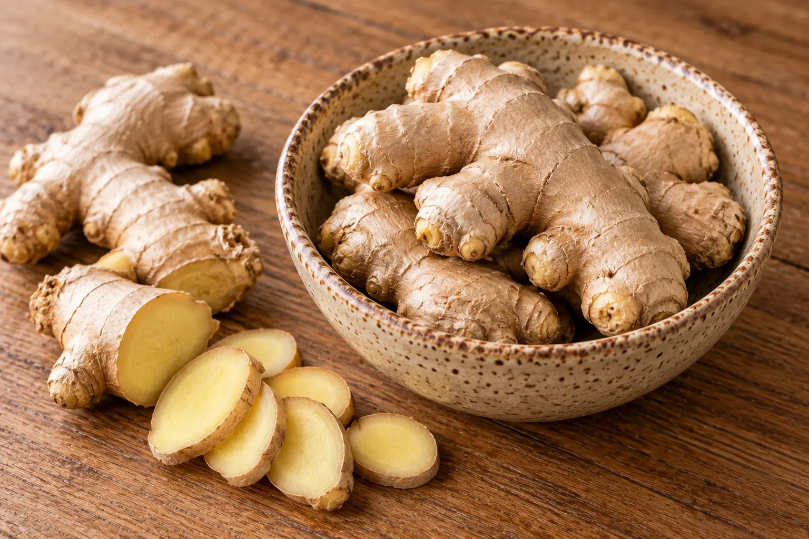
“O gengibre aumenta a testosterona.”
O gengibre é um tempero e um chá tradicionais, comuns na alimentação.
A ligação com a testosterona vem, sobretudo, de estudos em animais. A própria revisão sobre o tema afirma que o efeito ainda não foi confirmado em humanos.
Cuidado: o gengibre está entre as plantas com maior potencial de interação com o anticoagulante varfarina. Quem usa esse remédio deve avisar o médico antes de tomar gengibre de forma concentrada, como cápsulas.
Ginseng
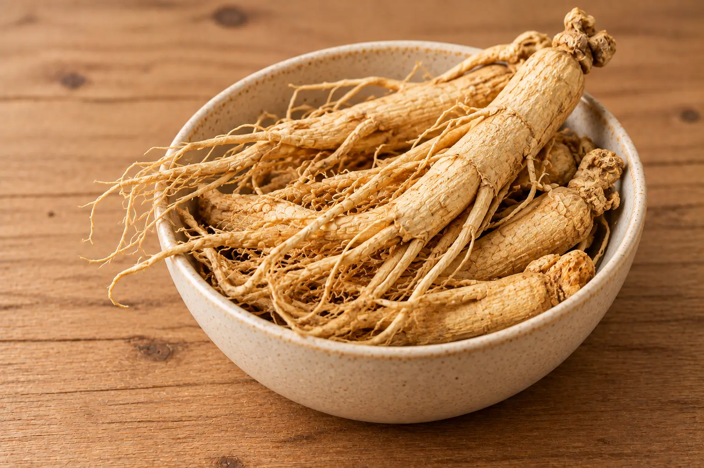
“O ginseng melhora a ereção.”
É o ingrediente com mais estudos sobre disfunção erétil, e há algum sinal de benefício. A revisão da Cochrane reuniu nove estudos com 587 homens com disfunção leve a moderada e encontrou um efeito pequeno em relação ao placebo, com evidência de baixa confiança.
A mesma revisão não encontrou estudos que comparassem o ginseng com os remédios de receita. Em resumo: ele pode ajudar um pouco em alguns quadros leves, mas está longe de equivaler a um tratamento médico.
Cuidados: os produtos só com ginseng têm eventos adversos parecidos com os do placebo (dor de cabeça, alterações do sono e do estômago). Já produtos que combinam ginseng com outros ingredientes foram associados a eventos graves.
Há registro de interação com varfarina, com antidepressivos do tipo IMAO e com álcool, e o ginseng pode alterar a pressão e a glicemia.
Maca
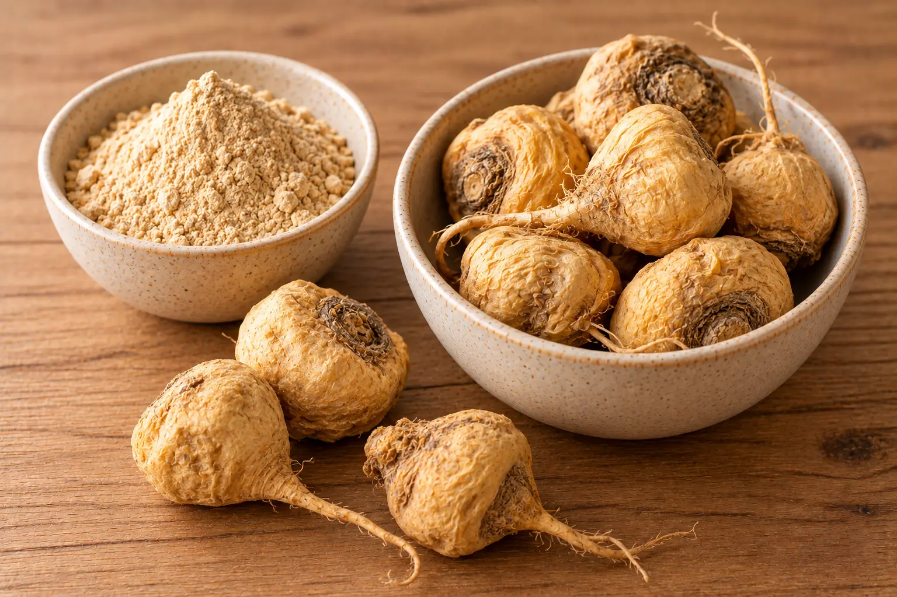
“A maca aumenta a testosterona e a libido.”
A maca tem resultados interessantes. Em um estudo de 12 semanas com 57 homens saudáveis, o desejo sexual aumentou, e isso aconteceu sem mudança nos níveis de testosterona.
Em homens com disfunção erétil leve, dois pequenos ensaios tiveram resultados diferentes: um mostrou melhora e o outro não. Somados, apontam um benefício leve, mas com apenas 79 homens. As revisões concluem que a evidência é limitada.
Prazo nos estudos: cerca de 12 semanas.
Catuaba
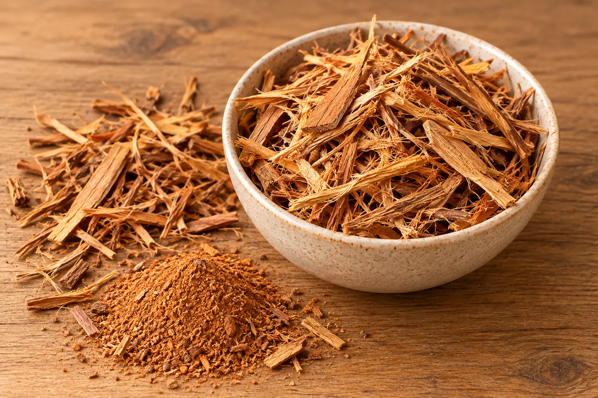
“A catuaba é o afrodisíaco brasileiro que acaba com a impotência.”
A catuaba faz parte da tradição popular brasileira e tem efeito estimulante moderado. Mas não existem estudos significativos que comprovem que ela trate a disfunção erétil em humanos.
Há ainda um problema de identidade: várias espécies diferentes são vendidas como “catuaba”, o que leva a adulterações e a resultados controversos.
Uso racional: quem quiser usar pode procurar um fitoterápico registrado, com bula e posologia definida, como a Catuama, que combina catuaba, marapuama, guaraná e gengibre. Mesmo assim, o efeito sexual não é comprovado, e a fórmula contém cafeína.
Marapuama (muirapuama)
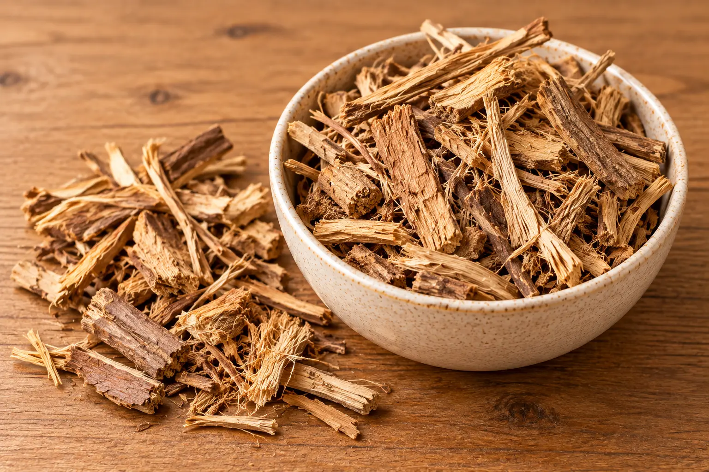
“A marapuama é a madeira da potência da Amazônia.”
A marapuama é usada há muito tempo como tônico e afrodisíaco, e esse uso tradicional é real. Mas faltam evidências clínicas para o uso isolado, e não há estudos de qualidade que digam qual seria a dose.
As revisões citam pesquisas antigas e pequenas, de cerca de 2 semanas. O efeito estimulante pode causar nervosismo e agitação.
Guaraná
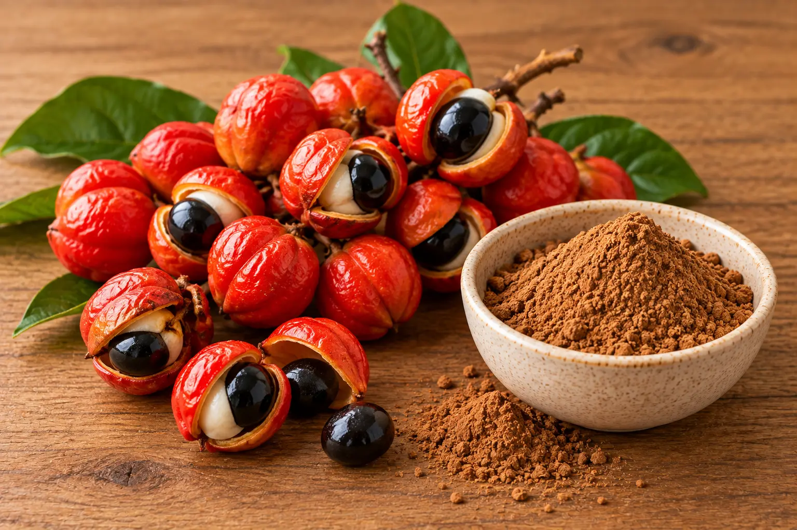
“O guaraná dá energia natural, sem química.”
A energia do guaraná é verdadeira, e vem da cafeína: as sementes têm um dos maiores teores naturais de cafeína conhecidos, de 0,6% a 6,2%, segundo a Embrapa.
Por isso ele pode elevar a pressão e provocar insônia, ansiedade e alterações no ritmo do coração, principalmente em excesso. Quem tem problemas cardíacos ou pressão alta precisa de cuidado extra.
Uso racional: trate o guaraná como cafeína e some a que você já toma no café, no chá-mate e nos energéticos. A bula da Catuama alerta que outros produtos com xantinas, como a cafeína, podem potencializar o efeito estimulante.
Misturar tudo: onde mora o risco
Cada ingrediente, sozinho, tem seus cuidados. Na farinha, eles se juntam. Você pode estar somando, sem saber, vários estimulantes (guaraná, ginseng, catuaba, marapuama) com algo que mexe na pressão (beterraba), em doses que ninguém mediu.
Uma revisão sobre o ginseng observou que os produtos com um só ingrediente raramente causam problemas, mas que produtos combinados, com ginseng entre vários componentes, foram associados a eventos graves e até a mortes. É mais um motivo para desconfiar de misturas caseiras ou industriais com muitos ingredientes e dose desconhecida.
Se, depois de começar a usar uma farinha, aparecerem palpitação, insônia forte, tontura ou dor de cabeça intensa, pare e procure atendimento.
O alerta mais importante: “natural” que não é natural
Esse é o ponto que mais preocupa. Produtos vendidos como estimulantes sexuais “100% naturais” podem esconder remédios de receita.
A Anvisa proibiu a venda do chamado “melzinho do amor”, depois que uma análise do Centro de Informação e Assistência Toxicológica da Unicamp encontrou sildenafila e tadalafila em um produto cujo rótulo dizia ser 100% natural. Em pessoas com problemas de coração, esses remédios podem causar queda grave e potencialmente fatal da pressão.
A agência também alertou que remédios para disfunção erétil aparecem em gomas, suplementos e fórmulas manipuladas sem autorização, com riscos como infarto, AVC e perda de visão ou audição. Um estudo de 2012, que analisou nove suplementos de ervas para desempenho sexual, encontrou análogos de sildenafila em vários deles.
Se o rótulo promete tratar disfunção erétil ou aumentar testosterona, desconfie. Alimentos e suplementos não podem prometer isso.
Nas decisões publicadas pela própria Anvisa, empresas de alimentos e suplementos são autuadas justamente por atribuir propriedades terapêuticas a seus produtos. A divulgação desse tipo de alegação, alerta a agência, pode levar a pessoa a adiar a procura por tratamento médico adequado.
Disfunção erétil: um aviso do corpo, não uma falha pessoal
A disfunção erétil costuma ser um sinal precoce de problema nos vasos sanguíneos. Os consensos médicos a tratam como um possível aviso de doença cardiovascular, porque os fatores de risco são os mesmos: diabetes, pressão alta, colesterol alto, cigarro, sedentarismo e excesso de peso.
Isso não é motivo de pânico. É um bom motivo para investigar, e é aí que a farinha pode atrapalhar: se ela “resolve” por um tempo ou dá uma falsa sensação de cuidado, o problema de fundo continua sem avaliação.
O que a ciência mostra de mais sólido é isto:
- perder peso e aumentar a atividade física melhoram a função erétil;
- os inibidores de PDE5 (como sildenafila e tadalafila) são o tratamento de primeira linha, sempre com avaliação e prescrição médica;
- esses remédios nunca devem ser combinados com medicamentos que contêm nitrato, pelo risco de queda perigosa da pressão;
- vale medir a testosterona em homens com disfunção erétil, como explicamos em Testosterona depois dos 50.
O que realmente ajuda no dia a dia
A boa notícia é que o que ajuda cabe no prato e na rotina, e muitas das sementes da farinha têm lugar nisso, como parte de uma alimentação variada, e não como atalho.
- Alimentação no estilo mediterrâneo. Uma meta-análise sugere que dietas mediterrâneas e com pouca gordura, ricas em frutas, verduras e oleaginosas, podem beneficiar o controle da disfunção erétil. Em um estudo com 250 homens com pressão alta e disfunção erétil, quem seguia melhor esse padrão tinha melhor desempenho erétil, mais testosterona e artérias mais saudáveis. Como foi um estudo observacional, ele mostra associação, e não prova que a dieta seja a causa.
- Exercício regular. A atividade física melhora tanto a função erétil quanto a saúde dos vasos. Os exercícios simples do artigo sobre movimento e autonomia são um bom começo.
- Peso, sono, cigarro e álcool. Parar de fumar, reduzir o álcool e cuidar do sono e do peso têm efeito favorável.
- Controle de pressão, diabetes e colesterol com acompanhamento médico.
- Conversa franca com o médico. Urologista ou clínico podem investigar a causa e indicar o tratamento certo.
Veja mais ideias de escolhas práticas em alimentação simples para uma vida mais ativa.
Resumo: efeito, prazo e quem deve ter cuidado
Quando não existe estudo que sustente um prazo, a tabela diz isso. Falta de dado também é informação.
| Ingrediente | O que a pesquisa mostra | Prazo nos estudos | Quem deve consultar o médico antes |
|---|---|---|---|
| Beterraba | Queda pequena da pressão arterial; sem prova de efeito sobre a ereção | De 2 a 56 dias | Quem usa remédio para pressão, nitrato ou remédio para disfunção erétil |
| Maca | Possível melhora leve do desejo e da função erétil em quadros leves; evidência limitada | Cerca de 12 semanas | Quem tem doença crônica ou usa remédios contínuos |
| Ginseng | Efeito pequeno sobre a ereção na disfunção leve a moderada; baixa confiança | Sem prazo padrão estabelecido nas revisões consultadas | Quem usa varfarina ou antidepressivos, ou tem diabetes ou pressão alterada |
| Gengibre | Sem efeito confirmado em humanos sobre a testosterona | Sem prazo definido, por falta de estudos em humanos | Quem usa varfarina |
| Catuaba | Sem comprovação clínica suficiente | Sem prazo definido | Quem escolher produto com cafeína, como os que levam guaraná |
| Marapuama | Evidência clínica insuficiente; estudos antigos e pequenos | Pesquisas antigas de cerca de 2 semanas | Quem é sensível a estimulantes (nervosismo, insônia) |
| Guaraná | Efeito estimulante por causa da cafeína; não é tratamento | Efeito de estímulo passageiro | Quem tem pressão alta, arritmia ou problema no coração |
| Sementes (chia, linhaça, gergelim, girassol, abóbora) | Valor nutricional (fibras, minerais, vitamina E, zinco); sem efeito comprovado sobre testosterona ou ereção | Sem prazo: fazem parte da alimentação | Quem tem intestino sensível, no caso de chia e linhaça em excesso |
Um roteiro rápido para usar com mais segurança
- Se você tem pressão alta, diabetes ou problema no coração, ou usa anticoagulante, antidepressivo, remédio de pressão ou nitrato, converse com o médico antes de começar qualquer mistura.
- Prefira alimentos simples e conhecidos (sementes trituradas, beterraba, gengibre) a misturas com vários estimulantes e dose desconhecida.
- Desconfie de rótulo ou de vídeo que promete tratar, curar ou aumentar a testosterona.
- Evite produtos para desempenho sexual sem registro, como sachês, gomas e “mel” vendidos como naturais.
- Observe como o corpo responde. Se aparecerem palpitação, insônia, tontura, dor de cabeça forte ou mal-estar, pare e procure atendimento. Efeitos adversos podem ser notificados no VigiMed, sistema da Anvisa.
- Não use a farinha no lugar da investigação médica.
Quando procurar um médico
Converse com um médico se você perceber:
- disfunção erétil que se repete ou piora;
- cansaço persistente ou queda importante da disposição;
- queda da libido que dura e incomoda;
- dor no peito, falta de ar ou cansaço fora do normal nos esforços;
- mal-estar depois de usar qualquer produto para desempenho sexual ou energia (leve a embalagem).
Um urologista ou um clínico pode investigar as causas, pedir os exames necessários e indicar o tratamento mais adequado para você.
Esperança sim, atalho não
Muita gente chega a esses posts cansada de tentar e com vontade de acreditar. A resposta honesta não é “nada funciona”: sementes são boa comida, a beterraba tem um efeito real (ainda que pequeno) sobre a pressão, e algumas ervas têm sinais promissores. Mas nenhuma delas é um tratamento comprovado para ereção ou testosterona.
O caminho que mais ajuda é menos mágico e mais seguro: investigar a causa, cuidar do coração, comer melhor, mexer o corpo e, quando for o caso, usar o tratamento certo com acompanhamento.
Mais clareza, menos promessa. O seu corpo merece cuidado de verdade.
Importante: este conteúdo é educativo e não substitui avaliação, diagnóstico ou acompanhamento médico. As informações sobre ingredientes e doses refletem o que foi encontrado em estudos e revisões, e não são indicação de uso. A decisão sobre investigar disfunção erétil ou baixa disposição, e sobre qualquer tratamento, deve ser tomada individualmente com um profissional de saúde.
Fontes principais
- Lee et al. — Ginseng for Erectile Dysfunction: A Cochrane Systematic Review. World Journal of Men's Health, 2022.
- Jang et al. — Red ginseng for treating erectile dysfunction: a systematic review. British Journal of Clinical Pharmacology, 2008.
- Panax ginseng: a systematic review of adverse effects and drug interactions. Drug Safety.
- Shin et al. — Maca (L. meyenii) for improving sexual function: a systematic review. BMC Complementary and Alternative Medicine, 2010.
- Lee et al. — Maca (L. meyenii) for erectile dysfunction: a systematic review and meta-analysis. Journal of Men's Health, 2023.
- Nitrate derived from beetroot juice lowers blood pressure in patients with arterial hypertension: a systematic review and meta-analysis.
- Ginger and Testosterone. Biomolecules, 2018.
- Correlation between serum zinc and testosterone: a systematic review. Journal of Trace Elements in Medicine and Biology, 2023.
- Serum testosterone and urinary excretion of steroid hormone metabolites after administration of a high-dose zinc supplement. Estudo com 14 homens saudáveis.
- Rosen et al. — The second Princeton consensus on sexual dysfunction and cardiac risk: new guidelines for sexual medicine.
- Erectile dysfunction and coronary artery disease prediction: evidence-based guidance and consensus, 2010.
- Association between improved erectile function and dietary patterns: a systematic review and meta-analysis.
- Angelis et al. — Exercise capacity benefit in relation to endogenous testosterone, coronary and central vascular physiology, and the Mediterranean regime in hypertensive males with erectile dysfunction. ESC Congress, 2021.
- La Vignera et al. — Physical activity and erectile dysfunction in middle-aged men. Journal of Andrology, 2012.
- Anvisa — Alerta sobre o uso indiscriminado de medicamentos para disfunção erétil, 2025, e resolução que proibiu o “melzinho do amor”, com análise do CIATox/Unicamp.
- Estudo de 2012 que analisou nove suplementos herbais para desempenho sexual e encontrou análogos de sildenafila.
- Anvisa — Decisões administrativas sobre alegações terapêuticas não aprovadas em alimentos e suplementos (RDC 243/2018).
- Revisão sobre plantas nativas brasileiras usadas na disfunção sexual masculina, incluindo a catuaba.
- Drugs.com — Muira puama (revisão de produtos naturais).
- Embrapa — Guaraná: importância terapêutica e teor de cafeína.
- EBSCO — Guarana's therapeutic uses, 2024.
- Laboratório Catarinense — Bula da Catuama (produto tradicional fitoterápico).
- Revisão sobre plantas medicinais e varfarina (gengibre, ginseng, alho, ginkgo e erva-de-são-joão entre as de maior potencial de interação).
- USDA FoodData Central e Tabela Brasileira de Composição de Alimentos (TBCA) — composição de chia, gergelim, girassol e semente de abóbora.
- UFSC — Avaliação da composição química da semente de abóbora (Cucurbita pepo). Dissertação de mestrado.